《How to AI Almost Anything》Lecture 2.1：Practical AI Tools
⚡一分钟速览▼
这集讲啥：MIT《How to AI Almost Anything》课程第二讲的实操环节。助教 David 和 Chanaka 不讲理论，直接打开两个 Colab 笔记本，带全班一行一行跑：先 PyTorch 基础，再用实验室自己采的"气味数据"训练一个分类器，最后切到 HuggingFace 微调大模型 + WandB 监控 + 调模型的通用方法论。
为什么重要：课程主线（多模态、生成模型那些大概念）需要落地能力托底。这堂课就是把"做 AI 项目"这件事从模糊变清晰——哪些命令必须会、哪些坑必踩、出了问题按什么顺序排查。对刚要动手做 project 的人，是性价比最高的一堂。
学完会跑通什么：
一句话主线：做 AI 项目 = 先彻底看懂数据 → 把数据收拾干净（归一化是命门）→ 用 DataLoader 喂 → 搭个最笨的模型先跑通 → 看 loss/指标迭代 → 大模型就用 HuggingFace+LoRA 省显存。调不出来时别急着换花哨架构，回去看数据、搭笨基线、故意过拟合。整堂课就是把这套工程肌肉记忆建起来。
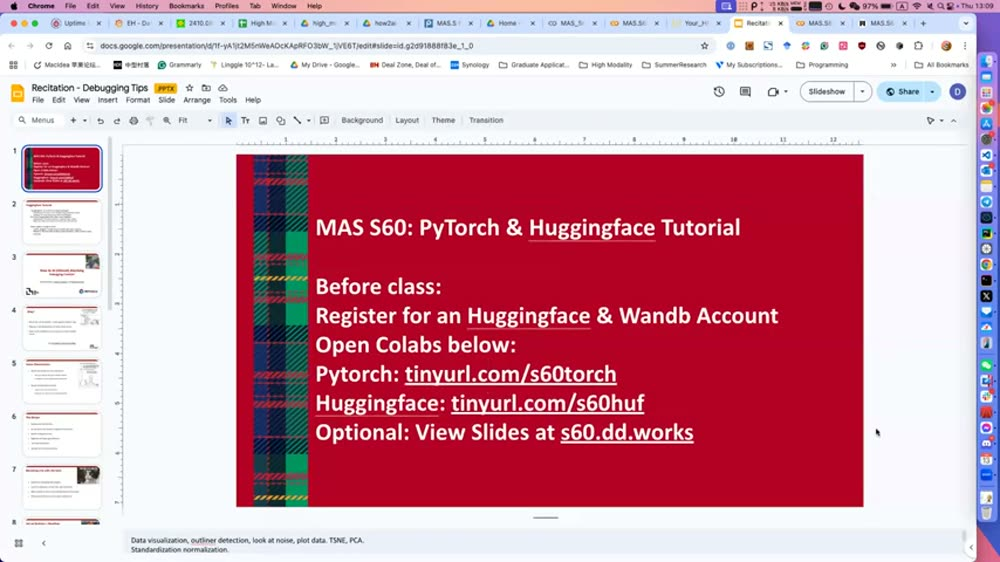
01开场：这堂 recitation 到底讲啥▼
00:00课务 + 两位助教登场
教授 Paul 先讲课务：助教 David 和 Chanaka 会负责 office hours、带读论文和讨论。学生要尽快交项目提案表（填队友和方向偏好），下周四做 5 分钟的项目提案展示（讲想做啥、用什么数据集），再下一周交一份文字版提案报告。如果还没组队，用共享的表格找兴趣相近的人。
01:35今天的菜单
今天 David 和 Chanaka 讲实战技巧：怎么用 PyTorch、怎么用 HuggingFace、怎么搭/迭代/调试自己的 ML 模型。David 先上：先过 PyTorch，再讲怎么在 HuggingFace 上找一个简单的预训练模型来微调。课前准备：注册 HuggingFace 和 WandB 账号，打开发的两个 Colab 链接，跟着敲。
定位很关键：这不是理论课，是"师傅带徒弟"式的上手课。如果你已经熟 PyTorch，前半段可跳；但后半段的 HuggingFace 微调和调模型方法论，几乎每个做 project 的人都用得上。
英文逐字稿（00:00–01:35）
02PyTorch 入门：Tensor 就是"会算梯度的多维数组"▼
02:24PyTorch 是什么
PyTorch 是个加速机器学习的库。它的核心是 Tensor（张量）——你可以先把它理解成线性代数里那一堆矩阵，只不过能放到 GPU 上飞快地并行计算、还自带自动求梯度。
03:14怎么造一个 Tensor
造 Tensor 有好几种方式：
- 有现成数据（比如二维数组
[[1,2],[3,4]]）→torch.tensor(data)。 - 有 numpy 数组 →
torch.from_numpy(arr)直接转过来。 - 要指定形状 →
torch.rand(2,3)（随机）、torch.ones(...)（全 1）、torch.zeros(...)（全 0）。
英文逐字稿（02:24–05:47）
03三大隐形 bug：dtype、device、元素乘 vs 矩阵乘▼
05:47坑一：dtype（类型）不对
Tensor 有不同类型（整数、浮点……），用 tensor.dtype 查。ML 里最常见的一类隐形 bug 就是 tensor 的类型不是你以为的那个：比如你建了个整数 tensor，想拿它去乘一个浮点 tensor，再把结果塞回整数里——类型不兼容就出错。所以加载数据后第一件事就是查 dtype（用 print 或 debugger）。
06:35坑二：device（设备）不一致
因为是 ML 库，Tensor 能放在不同设备上——CPU 或 GPU。用 tensor.device 查它在哪。另一个超常见的错误：两个 tensor 一个在 CPU、一个在 GPU，你想让它们相乘——不行。要先用 tensor.to(device) 把它挪到你要算的设备上。
07:24坑三：* 是元素乘，不是矩阵乘
基本运算 x + y 是逐元素相加。但注意 x * y 不是矩阵乘法，是逐元素相乘（element-wise）。如果你是 MATLAB 背景会习惯把 * 当矩阵乘，PyTorch 里不是。真要矩阵乘（行乘列再相加）用 torch.mm（或 @）。
这三条是新手最爱踩的隐形坑：程序不报错、或报个莫名其妙的错，结果却全错。养成习惯——加载完数据先 print(x.dtype, x.device, x.shape)，乘法前先想清楚要的是元素乘还是矩阵乘。后面 David 反复强调"出问题先 print 出来看"，根子就在这。
英文逐字稿（05:47–08:14）
04动手项目：先看数据 —— 气味传感器三分类▼
08:14一个真实的小项目
David 拿实验室自己采的气味数据做完整 demo：他们有一堆气体传感器，能采某种物质的"气味"。这次做三分类——把气味分成 ambient（环境本底）、alcohol（酒精）、coffee beans（咖啡豆）。数据是一堆 CSV 文件，每个类别对应一组文件。代码里先用 os.listdir 把文件路径都收集起来。
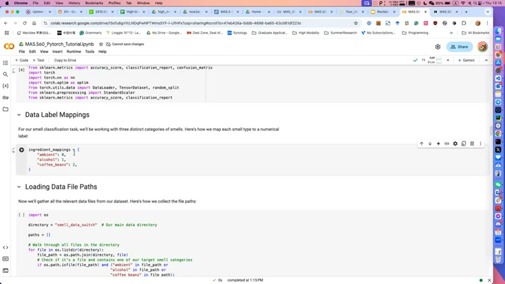
09:05铁律：建模前一定先看数据
David 强烈建议：动手建模前一定先打开数据看一眼。原因很实在——数据经常不是你以为的那个格式。文档页上写的是一种格式，下载下来可能是另一种，无论是你自己采的还是网上下的都常这样。所以先 os.listdir 列文件、打开一个 CSV 看列名（每列对应一个气体传感器的读数）。
10:45时间序列要可视化
如果是时间序列数据，可视化尤其重要——画出来你才能一眼看出哪些通道（传感器）跟类别相关、哪些没关系。他们的采集方法很巧：先采一段"环境本底"（白色区域），再把物质凑近传感器采真实读数（红色区域），这样能扣掉环境影响，对这个项目特别管用。
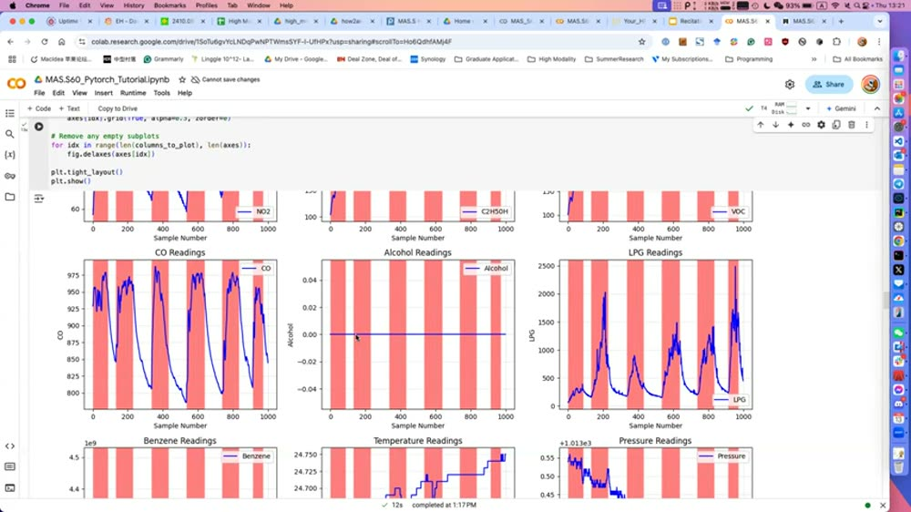
13:19该不该删掉"没用"的通道？
有学生问：有的传感器明显没工作（比如这次的 alcohol 传感器是条直线），要不要删掉这列？David 的建议是：大多数时候不用删——如果某通道跟任何类别都无关，神经网络训练后会自动学会忽略它。神经网络对单个通道的噪声通常很鲁棒。只有当模型完全不工作时，才考虑去删一些通道。而且要删也得看全部数据再决定，不能只看一个文件（这个传感器在别的样本里其实是工作的）。
英文逐字稿（08:14–15:43）
05预处理：归一化是真正的命门▼
15:43这份数据其实挺干净
David 说神经网络对单通道噪声很鲁棒；只有噪声散落在很多通道时才麻烦，那时才需要 PCA 之类去降噪。但这份数据其实挺干净，不需要额外去噪。他们只做了一步：取每段的平均、再减去环境本底读数——因为每个传感器的初始读数本身就很随机、每次不一样，减掉本底得到"相对变化"，数据更稳。
17:18最重要的预处理：把量纲拉到同一范围
关键来了：不同通道读数的范围差太多——比如 LPG 是 0~2000，O2 只有 50~100。这暴露一个核心问题：神经网络对"数值范围差异"不鲁棒。如果某列动辄上千，它会主导整个训练，把小范围的通道淹没。
所以做归一化（normalization）：用 sklearn 的 StandardScaler 把输入 x 变换到统一范围（大致 0~1 那种尺度）。这是这个项目里最重要的一步预处理。
记死这条：忘了归一化 = 大数值通道一家独大，模型基本废。这不是锦上添花，是必做项。判断方法很简单：把各列的 min/max 打印出来，量级差好几个数量级就必须归一化。
英文逐字稿（15:43–18:55）
06Dataset / DataLoader：怎么把数据成批喂进去▼
18:07切分 + 转成 Tensor
归一化后做 80/20 切分：80% 训练、20% 测试。把数据转成 PyTorch tensor（注意标签 y 要用 dtype=torch.long，这又是 dtype 那个坑），用 TensorDataset + random_split 拆。
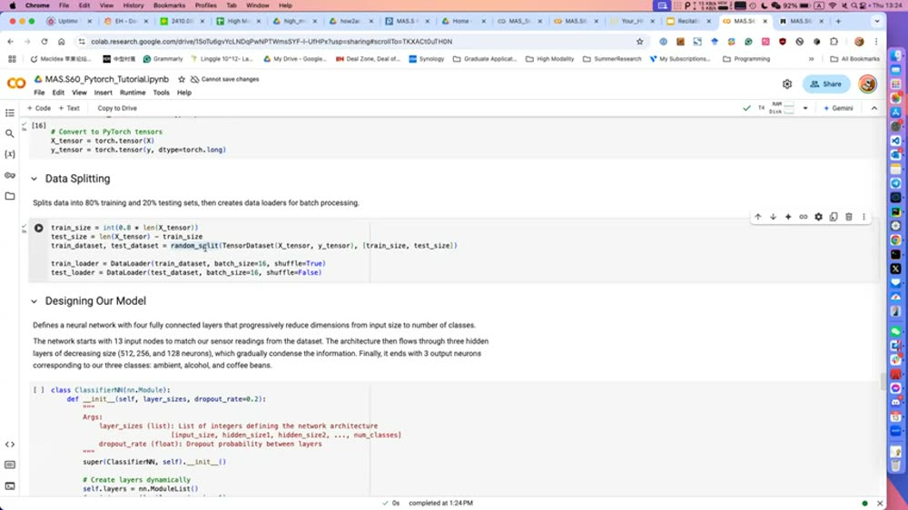
18:55Dataset vs DataLoader 的分工
两个概念别混：
- Dataset：负责"给你数据"——你问它要第 i 个样本，它给你。
- DataLoader：PyTorch 的加载器，启动多个 worker 进程并行加载（加速），而且每次给你的不是一个样本，是一批（batch）样本。
19:45为什么要 batch + 实战 tip
一次处理一批的好处：算出来的梯度更稳——它是这一批多个样本的平均，不会被单个样本带偏。实战 tip：训练时在显存放得下的前提下，batch size 尽量开大，训练过程更稳。
英文逐字稿（18:07–20:36）
07搭一个最简 MLP + 训练循环▼
20:36模型就是几层 Linear 叠起来
模型很朴素：一个 MLP（多层感知机），几层 Linear + BatchNorm + ReLU 激活叠起来。输入维度 13（13 个传感器通道），输出维度 3（三分类）——这两个数固定不能改，中间的隐藏层大小随便调（512、256、128……）。
21:26几层够用 + 怎么定层数
有学生问怎么决定层数和每层大小，是不是只能靠经验？David：好的起点就是从简单开始——先两三层看效果。对他们这种简单数据，两三层就够。
21:26训练循环：五步一个 epoch
训练循环虽长，核心就五步，每个 batch 走一遍：
- 从 DataLoader 拿一批数据和标签；
- 喂进模型得到输出（预测）；
- 拿预测和理想答案比，算出 loss；
loss.backward()算梯度（告诉你参数该怎么调才更好）；optimizer.step()真正更新参数让模型变好。
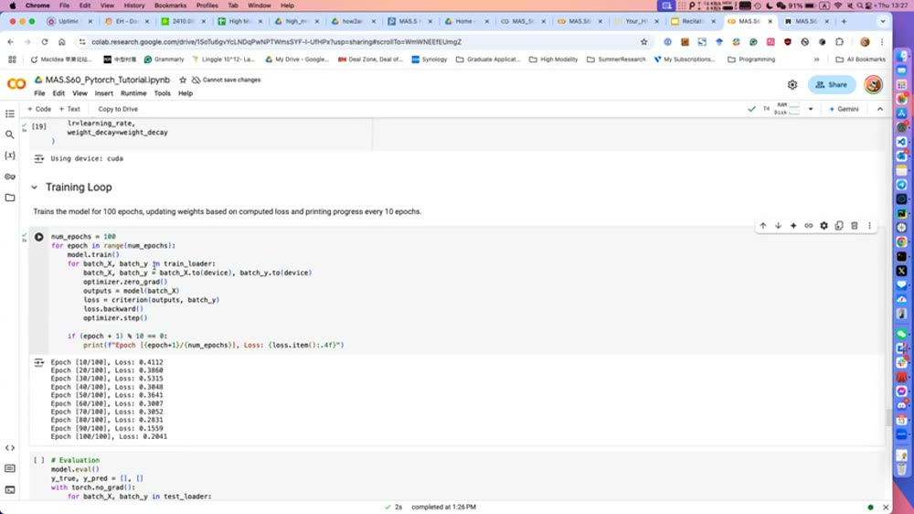
optimizer.zero_grad()→model()→loss→loss.backward()→optimizer.step()。右下输出显示 loss 从 0.41 一路降到 0.20，100 个 epoch 训练在 GPU（cuda）上跑。注意循环里第一行是 optimizer.zero_grad()——每个 batch 先把梯度清零再算。这正是 micrograd 那一集里"梯度要累加，所以每轮先 zero_grad"那条铁律在真实代码里的样子。忘了它就是最经典的训练 bug。
英文逐字稿（20:36–22:13）
08评估 + 看哪类差 + 迭代改进 + 存模型▼
22:13评估：跟训练一样，只是不更新
评估和训练几乎一样，唯一区别：把数据喂进模型、比对答案，但不更新模型（用 model.eval() + torch.no_grad()）。结果准确率 ~75%，还凑合。
23:01看每一类的细分指标
更要看每个类别的细分（precision / recall / F1）：模型对 ambient 和 alcohol 识别得不错，但对 coffee（咖啡豆）很差。
23:53迭代改进的套路
怎么改进？先定位哪类表现最差，再问为什么：是数据不够，还是别的原因。如果是 coffee 数据不够，那就多采点咖啡豆的样本。这就是迭代改进模型的基本动作——看指标 → 找最弱环节 → 对症补。
23:53别忘了存模型
最后一定要存模型（torch.save(model.state_dict(), "model.pth")），以后做进一步分析或部署能直接加载。
英文逐字稿（22:13–24:40）
09train/test 怎么切才不算"作弊"▼
24:40分类的是"片段"不是单点
有学生问分类的对象是整段时间序列还是单个采样点？David：把整段读数切成片段（一段约 10 行 / 10 秒），对每个片段做分类。教授补充：窗口多大、标签怎么对应窗口——这些设计决策在实际应用里超级重要。
25:30切分不当 = 偷偷作弊
教授点出一个致命陷阱：如果你的训练集和测试集来自同一天、同一小时采的样本，模型可能只是记住了这些样本，而没真正学会泛化——等你换天用就废了。这类超参数（窗口、切分方式）是 ML 里你必须亲自设计、想清楚的。
26:18原则：切分要贴近真实使用场景
David 给原则：train/test 切分要尽量贴近真实使用场景。如果你打算"今天训练、改天使用"，那切分就该按天切——不能拿一段会话的前半训练、后半测试（那样测出来好看，但不代表真实表现）。
27:06一个真实教训：换个房间就不灵
他们在实验室某个房间采数据训了个模型，换到别的房间或户外就不工作了——因为模型没学会区分不同的环境因素（温度、湿度等）。所以如果你要在 A 训练、B 使用，就得把两种场景的数据都采上、按场景切分。
这是整堂课最值钱的一段。很多人模型在自己电脑上 90%+，一上线就崩，根子常常就是 train/test 切分泄漏了信息（同一天/同一房间/同一会话）。切分方式 = 你对"将来怎么用"的诚实模拟。切得越像真实部署，离线指标才越可信。
英文逐字稿（24:40–27:06）
10随机森林：简单模型反而把深度模型按在地上▼
27:06随机森林是什么
David 又用随机森林（Random Forest）跑同一份数据对照。随机森林不是深度学习，它是一堆决策树投票：每棵树给个判断，最后多数表决。用 sklearn 的 RandomForestClassifier，训练飞快、占资源少。
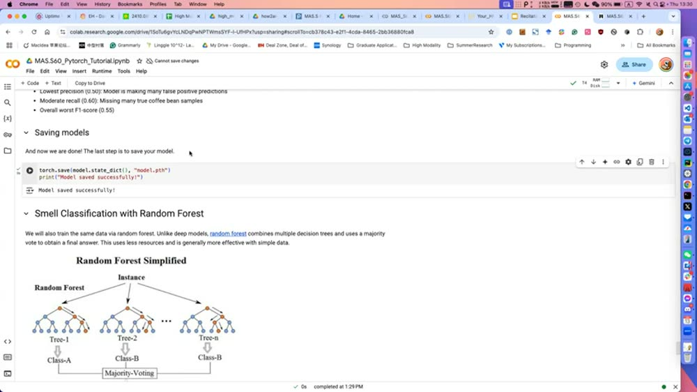
27:54结果：95.8%，吊打 75% 的深度模型
随机森林准确率 95.8%，远高于深度 MLP 的 75%。这给了一条重要经验：对简单、低噪声的数据，浅模型（随机森林、SVM）往往比花哨的深度模型表现更好。
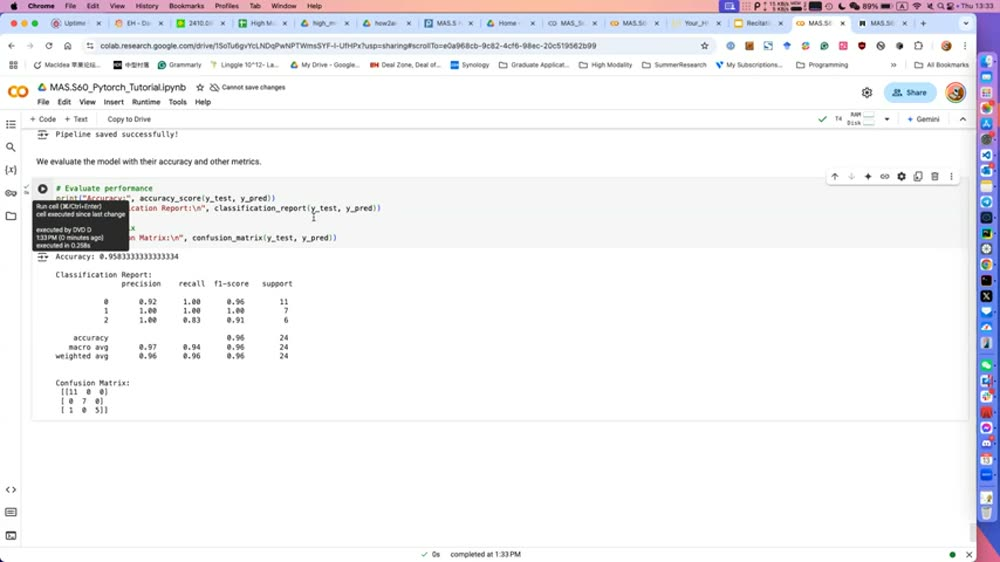
28:44实战 tip：低维数据先上浅模型
David 的建议：当每个数据点只是几百个数字这种"低维数据"时，表现最好的往往是浅模型（随机森林、SVM）。先从简单浅模型起步，再考虑深模型。
29:34泛化的本质区别
关于"换房间就失灵"是否对随机森林也成立：David 说一般来说简单模型对噪声更鲁棒，因为复杂模型决策边界很紧、更容易过拟合训练数据的噪声，对环境变化不鲁棒。真正的根因是数据不够：视觉任务有强大的预训练编码器兜底，几乎啥数据都能用；但时间序列数据很难跨域泛化，常常一个环境能用、换个环境就不行。
"啊原来如此"：别一上来就深度学习。数据简单/量小/低维时，随机森林、SVM 这种老牌浅模型经常更快更准更稳。深度模型是为复杂高维数据（图像、文本）准备的重武器，杀鸡别用牛刀。
英文逐字稿（27:06–30:25）
11切到 HuggingFace：它不是一个包，是一套全家桶▼
30:25HuggingFace 是什么
HuggingFace 不是单个包，而是一套包的集合，让你用更少代码训更大的模型。两个核心子包：
- transformers：提供 API，一键用预训练权重初始化大模型。
- datasets：让你轻松从网上下公开数据集。
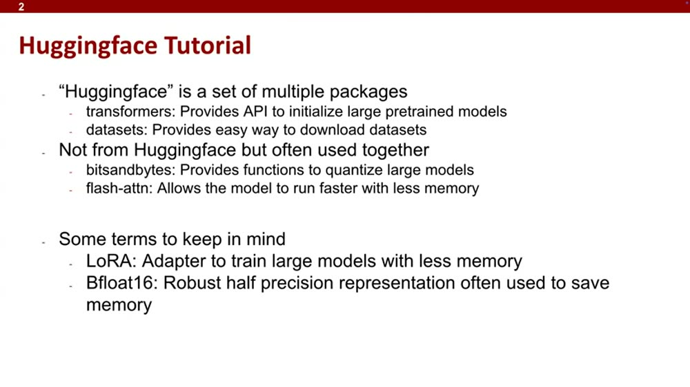
31:13怎么选模型/数据集 + 配套包
怎么选？去 HuggingFace 网站搜，看你的场景下哪些模型热门，挑一个、把名字填进代码就能用。还有些不是 HuggingFace 官方但常配套的包：
- bitsandbytes：量化（quantize）大模型，把它变小、更好塞进 GPU 显存。
- flash-attn：让训练更快、更省内存。
32:52本课用 LoRA 微调
这次用 LoRA——它本质是个适配器（adapter），让你只训练极少量参数就能微调一个大模型，从而省显存。还有 Bfloat16：一种鲁棒的半精度表示，常用来省显存。
英文逐字稿（30:25–33:00）
12上手微调：登录 + gated 模型 + 选 GPU▼
33:00先登录 HuggingFace
用模型前要先 notebook_login() 登录 HuggingFace。原因是他们用的模型 StarCoderBase-1B（一个 10 亿参数、在 80+ 种编程语言上训练的代码模型）是"gated"（受限访问）——你得先在模型页同意条款、申请访问权限。
33:44关键：把运行时改成 GPU
跑任何 cell 前，一定先在 Colab 把运行时类型改成 GPU（Runtime → Change runtime type → 选 T4 GPU）。这次能用的是 Nvidia T4，4GB 显存。
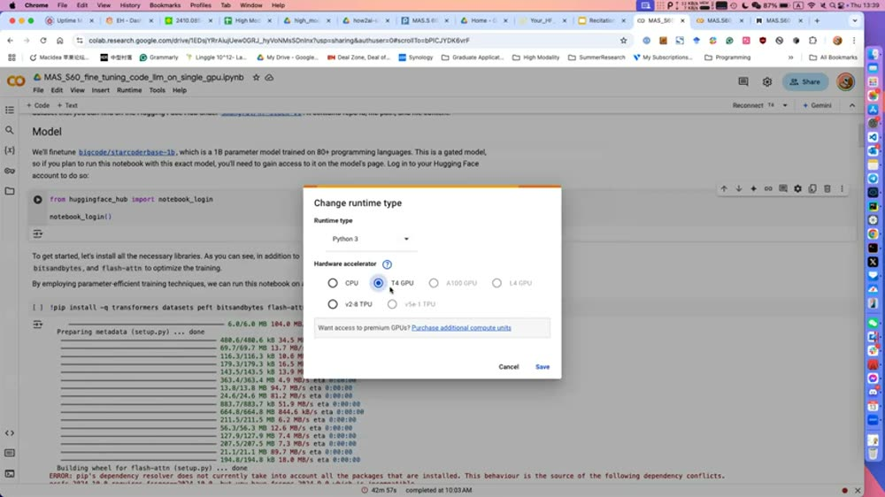
34:34拿 token + 装包
登录时它让你填 HuggingFace token：去 HuggingFace 个人页新建一个 token（要发布模型就选对应权限），复制粘贴回 Colab。然后装一堆包（前面讲的 transformers / datasets / peft / bitsandbytes / flash-attn）。
英文逐字稿（33:00–36:16）
13配置参数：模型多大、要配多少显存▼
36:16显存的拇指法则
怎么估一个模型能不能塞进你的 GPU？看模型名字里 B 前面的数字（StarCoderBase-1B = 10 亿参数）。拇指法则：把 B 前面的数字 ×2，就是推理大致需要的最小显存（GB）。所以 1B 模型推理大约要 2GB。训练要更多（取决于怎么训）。
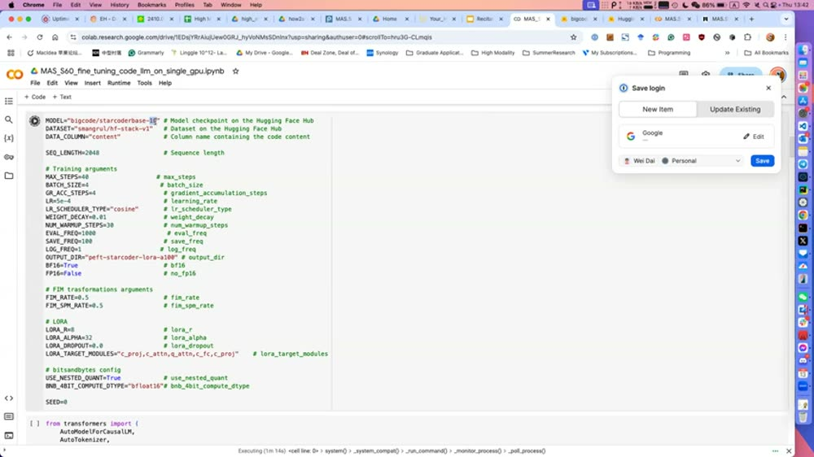
37:54加载数据 + tokenizer
用 datasets 一行加载数据集（这次只取 4000 条样本，时间不够全跑）。再初始化 tokenizer（分词器）——它把英文词翻译成 LLM 能懂的 token。用大语言模型基本都得过这一步，但很简单，调一下 tokenizer 就行。
40:264-bit 加载 + LoRA
加载模型时用 4-bit（因为 T4 显存小，只能塞下这个尺寸）。David 提醒：理想情况应该用 16-bit 让训练更稳，4-bit 不太稳定，但这次为了塞进 Colab 只能 4-bit。然后挂上 LoRA、开始训练。
英文逐字稿（36:16–41:17）
14WandB 盯训练：先看显存占用和 GPU 功耗▼
41:17WandB 是训练监控仪表盘
HuggingFace 跟 WandB（Weights & Biases）集成得很好——这是个训练监控工具，实时画出训练过程的各种曲线。运行训练时它给你一个链接，去 wandb.ai/authorize 登录、把 API key 粘回来，就能在网页上看训练直播。
42:57第一眼看两个硬件指标
David 说他每次训练首先看两块面板：
- GPU Memory Allocated（显存占用 %）：太高（如 95%）→ 很可能训练中途 OOM（爆显存）；太低 → batch size 开太小、训练不理想。
- GPU Power Usage（功耗 %）：反映 GPU 有多忙。如果只有 10% → GPU 大部分时间在空转，说明你的数据处理/训练管线效率太低。
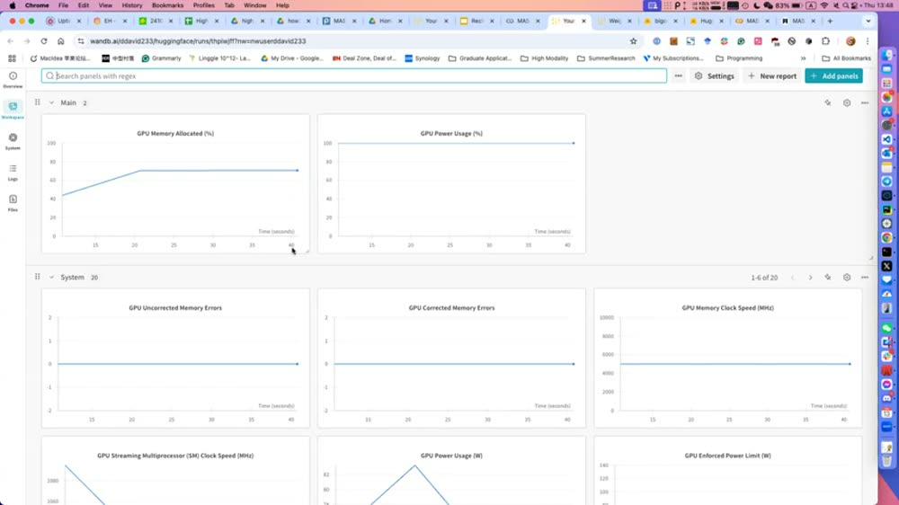
43:45两个目标区间
- 显存维持在 80~90%：既不易 OOM，又充分利用了显存。
- 功耗 > 60% 为佳：低于这个数就去查数据集实现/预处理脚本/训练管线哪一段太慢。
英文逐字稿（41:17–44:35）
15再看 loss 和 grad_norm：训练有没有在收敛▼
45:24loss 该怎么走
硬件指标之外，loss 当然最重要——loss 不下降就是出问题了。但要注意：前几步甚至前几百步 loss 不降很正常（学习率没热好、模型还很烂）；但之后一定要往下走，否则训练不会收敛。
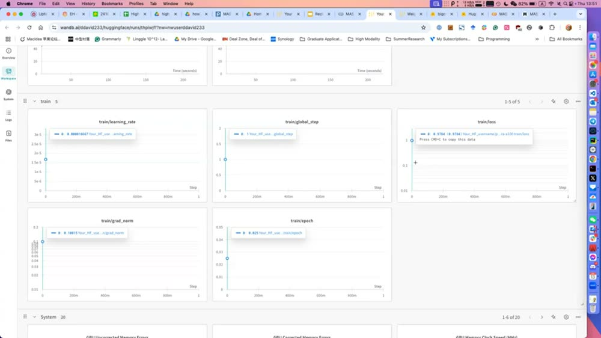
46:15grad_norm（梯度范数）
另一个要看的是 grad_norm——每个训练步里梯度的平均幅度。它大说明模型每步在做很大的更新。随着模型收敛，grad_norm 应该逐渐变小（越接近最优点，更新应越小）。如果 grad_norm 反而越来越大，说明训练出了问题。
监控的优先级总结：先看硬件（显存别爆、GPU 别空转），再看 loss（必须趋势下降）、grad_norm（应随收敛减小）。这套"先硬件、后曲线"的查看顺序，就是有经验的人盯训练的标准动作。
英文逐字稿（45:24–47:53）
16调模型是门手艺：The Recipe（Karpathy 风格方法论）▼
47:53调 AI 模型更像艺术而非科学
Chanaka 接手讲调模型的方法论。核心哲学：调 AI 模型更像一门手艺（art），不是一门精确科学。写普通程序你有明确信号知道对不对；但 ML 模型什么时候算"工作"很模糊。所以需要一张调试清单，让你心里有数：能改哪、该查哪。有时梯度爆高、有时极低、有时 loss 直接 ∞——这张 recipe 就是教你遇到这些怎么办。
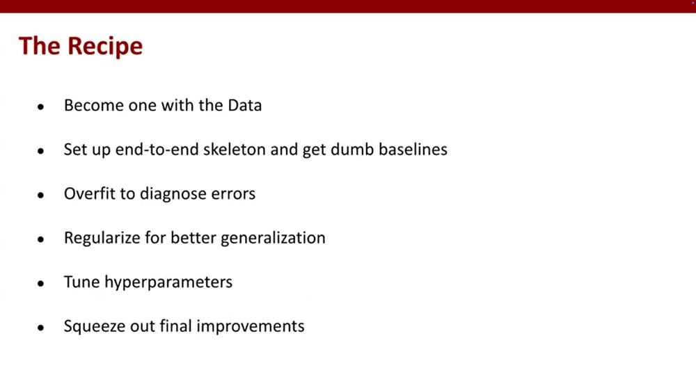
49:30第一步：跟数据"合体"（Become one with the Data）
工程师都爱用最花哨的模型，但这跟做出好结果是反着来的。一开始要花大量时间盯着数据看，理解数据分布，自己找出里面的规律。尤其当你数据不多时（不像那些大语言模型有海量数据），你得设计能建模这些规律的模型。
50:17第二步：搭端到端骨架 + 笨基线
看完数据、有了直觉，先搭一个最简单的模型拿到信号——线性回归、简单 CNN 都行。如果是别人整理过的公开数据集，GitHub 上很可能已有人解过，直接拿来跑。还有两个工程细节：固定随机种子（让过程确定、少一个变量）；永远检查初始化时的 loss——很多时候初始 loss 是 ∞，这是个很好的健康检查。
51:03第三步：故意过拟合一个样本来诊断
如果模型怎么都不工作，试着让它过拟合（overfit）一个样本——确保模型能把单个样本背下来。如果连一个样本都学不会，说明模型本身有毛病，回去重新设计。能过拟合小数据集后，看能不能把误差降下去；降不下去就回到"看数据"或重新设计建模策略。这一步要可视化 loss 动态和梯度——梯度飙到 ∞ 可能是没写好、初始化不对、或数据没归一化好。
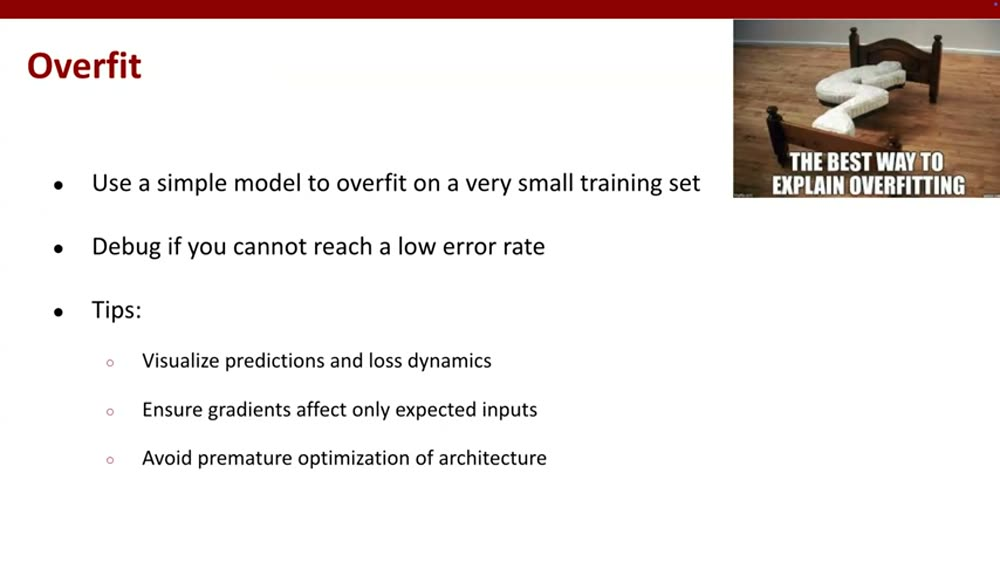
52:39最大的忠告：别先纠结架构
最大的 takeaway：一开始别太纠结架构。很多人读了篇论文就想搞个酷炫架构——这是反直觉的错误。ML 在乎的不是记忆而是泛化：等模型确实能在训练集上过拟合了，再上 dropout、weight decay 等正则化手段；在那之前别碰正则化。
53:26第四~六步 + 总流程
剩下的步骤：
- 调超参：很多时候模型其实没问题，只是超参没找对。小模型尤其值得多搜几组超参——很多人 default 一跑、准确率烂、就放弃了，其实好好训能出很好的结果。
- 榨取最后提升：用模型集成（ensemble）、训练到超过收敛点（有时有帮助）。
- 做完上面这些，最后才去看更复杂的架构。
总流程一句话：先看数据 → 搭简单模型 → 在数据上过拟合 → 能过拟合后正则化 → 再 finetune 到你要的性能。Chanaka 推荐课后读两篇博客（其中一篇是 Ali Rahimi 的）把这套思路吃透。
这就是整堂课的灵魂。新手最爱的两个错误：① 一上来用最花哨的模型/架构；② 模型不灵就乱调架构。正确顺序恰恰相反——数据 → 笨基线 → 过拟合诊断 → 正则化 → 调超参 → 最后才碰架构。这套 recipe 不只对深度学习，对任何 ML 项目都适用。
英文逐字稿（47:53–54:13）
🧠费曼重讲：用大白话把这堂课讲到能复述▼
1. 这堂课其实在教"开车"，不是"造发动机"
上一集（micrograd）讲的是发动机内部——反向传播怎么算梯度。这堂课完全换了视角：不拆发动机了，教你怎么开车上路。PyTorch 和 HuggingFace 就是车，这堂课就是驾校教练带你实地开一圈：怎么挂挡（Tensor）、哪三个动作最容易出事故（dtype/device/乘法）、怎么看仪表盘（WandB）、车开不动了按什么顺序检修（The Recipe）。
2. Tensor = 会算梯度、能上 GPU 的多维数组；三个隐形坑要背下来
Tensor 你就当成 Excel 表格 / 矩阵，只不过能塞进显卡里飞快算、还自带"求梯度"功能。新手最常摔的三跤，记成口诀：
- 类型对不对（dtype）：整数和小数混着算会出错，加载完先
print(x.dtype)。 - 在不在一块儿（device）：一个在 CPU、一个在 GPU 的两个数没法一起算，要
.to(device)先搬到一起。 - 乘法是哪种乘：
*是"对位相乘"（逐元素），不是数学课的矩阵乘；要矩阵乘用torch.mm。
啊原来如此 ①：很多"我的代码不报错但结果全错"的诡异 bug，根子就是这三个之一。养成"加载完先 print 出来看一眼"的习惯，能省下你 80% 的抓狂时间。
3. 做一个 AI 项目的完整流水线，长这样
用气味分类那个例子，把流水线串一遍，像做菜：
- 买菜前先看菜（看数据）：打开数据画出来看，哪些传感器有用、哪些是哑的。数据格式经常跟你想的不一样，不先看一眼后面全白干。
- 洗菜切菜（预处理）：最关键一步是归一化——把所有传感器的读数拉到同一个尺度。不然某个动辄上千的通道会像桌上一大盆盐，把别的味道全盖住，模型只尝得到它。
- 分餐（DataLoader + batch）：把数据一批一批端上桌，而不是一粒米一粒米喂。一批一起算，方向更稳，还能并行加速。
- 先炒个最简单的菜（笨模型）：搭两三层的小网络先跑通，别一上来就满汉全席。
- 尝味道、找最难吃的那道（评估 + 看每类指标）：哪类识别得最差就重点补它的数据。
- 装盘留样（存模型）：训好一定存下来。
4. 反常识的一课：花哨模型经常输给老实模型
同一份数据，深度神经网络只有 75%，老老实实的随机森林（一堆决策树投票）反而 95.8%。为什么？数据简单、量小、维度低的时候，复杂模型容易"想太多"——把训练数据里的噪声也当规律背下来，换个场景就废。简单数据配简单模型，杀鸡别用牛刀。
最贵的一个坑：train/test 切分别作弊。如果训练和测试的数据来自同一天/同一个房间，模型可能只是"背"住了，没真学会。它换天换房间就崩。切分方式要诚实模拟你将来怎么用——你打算改天用，就按天切；你打算换地方用，就把别的地方的数据也采来。离线 95% 上线却崩，十有八九栽在这。
5. 大模型怎么玩：HuggingFace 全家桶 + LoRA 省钱大法
自己从零训大模型太贵。HuggingFace 是个"预制菜超市"：transformers 一行代码把别人训好的大模型搬回家，datasets 一行下数据集。但大模型塞不进小显卡怎么办？两招省显存：
- 量化（bitsandbytes）：把模型参数从高精度压成低精度（4-bit），模型瞬间瘦一圈，塞得进 4GB 的小显卡了（代价是稍微不稳）。
- LoRA：不去动那几十亿个原始参数，只在旁边挂一小撮"可训练的旋钮"，只训这一小撮就能让大模型学会新任务。显存和算力都省一大截。
估显存有个拇指法则：模型名里 B 前面的数字 ×2 ≈ 推理要的 GB。1B 模型 ≈ 2GB，训练还要再多点。
6. 盯训练像看病人监护仪：先看生命体征，再看化验单
WandB 是训练的"监护仪"。看的顺序很有讲究：
- 先看生命体征（硬件）：显存占用别冲到 95%（会爆/OOM），也别太低（说明 batch 太小没吃饱），80~90% 刚好；GPU 功耗别只有 10%（说明卡在空转、喂数据太慢），最好 60% 以上。
- 再看化验单（loss / grad_norm）：loss 要持续往下走（前几百步不降是正常的热身）；grad_norm（每步更新的力度）应该随着收敛越来越小，如果反而越来越大，说明训练出事了。
啊原来如此 ②："GPU 功耗只有 10%"不是 GPU 坏了，而是你喂数据太慢、卡饿着了。这时该去优化数据管线，而不是换更大的显卡。
7. 模型调不出来时，按这个顺序排查（The Recipe）
这是全课最该裱起来的一张图。新手的本能是"模型不灵就换个更酷的架构"——恰恰是大错。正确顺序反过来：
- 跟数据合体：盯着数据看到能自己说出规律。
- 搭最笨的骨架先跑通：固定随机种子、检查初始 loss 是不是 ∞。
- 故意让它过拟合一个样本：连一个样本都背不下来 = 模型本身有病，回去改。
- 能过拟合了再上正则化（dropout / weight decay）去提升泛化。
- 调超参：很多"烂模型"其实只是超参没调对。
- 最后才碰花哨架构。
一句话复述（你现在应该能讲出来）：做 AI 项目不是比谁的模型酷，是比谁更懂自己的数据。先把数据看透、收拾干净（归一化是命门），搭个最笨的模型跑通，用 loss 和指标找最弱环节迭代；调不出来时别动架构，回去看数据、搭笨基线、故意过拟合诊断，再正则化和调超参。大模型就用 HuggingFace + LoRA + 量化省着玩，训练时盯着 WandB 先看显存功耗再看 loss。整套流程就是"数据 → 笨基线 → 过拟合 → 正则化 → 调参 → 架构"这个顺序，反过来做必踩坑。
🗂核心概念卡▼
torch.tensor / from_numpy / rand / ones / zeros 创建；三个隐形坑是 dtype、device、*（元素乘）vs torch.mm（矩阵乘）。StandardScaler；被点名为"这个项目最重要的预处理"，因为传感器通道范围从 50 到 2000 差太大。TensorDataset + DataLoader(batch_size=16)；batch 让梯度更稳，显存够就把 batch 开大。optimizer.zero_grad() 清梯度（呼应 micrograd 那集的 zero_grad 铁律）。RandomForestClassifier，95.8% 准确率反超 75% 的深度 MLP；低维简单数据首选浅模型。✅这集最该记住的几条▼
① 建模前先看数据，归一化是命门。数据格式常跟你想的不一样，建模前务必打开看、画出来。各特征范围差几个数量级时，必须归一化，否则大数值通道一家独大、模型基本废。
② Tensor 三大隐形坑：dtype / device / 元素乘。类型不对、设备不一致、把 * 当矩阵乘——这三个会让代码不报错却全错。习惯：加载完先 print(x.dtype, x.device, x.shape)。
③ train/test 切分要诚实模拟真实使用。同一天/同一房间的数据混着切 = 偷偷作弊，模型只是记住而非泛化，上线即崩。切分方式 = 你对"将来怎么用"的诚实模拟。
④ 简单数据别上花哨模型。同一份数据随机森林 95.8% 吊打深度 MLP 的 75%。低维、量小、噪声少的数据，浅模型（随机森林 / SVM）往往更快更准更稳。
⑤ 大模型用 HuggingFace + LoRA + 量化省着玩。transformers/datasets 几行搞定加载；LoRA 只训一小撮参数、量化把模型压进小显卡。显存估算：B 前的数字 ×2 ≈ 推理 GB 数。
⑥ 调不出来时按 The Recipe 来，别先动架构。顺序是数据 → 笨基线 → 故意过拟合诊断 → 正则化 → 调超参 → 最后才碰架构。盯训练先看显存功耗，再看 loss（必须降）和 grad_norm（应随收敛减小）。
🔗References▼
- MIT MAS.S60《How to AI Almost Anything》(Spring 2025) — Lecture 2.1: Practical AI Tools（PyTorch & HuggingFace 实操 recitation，TA David 与 Chanaka 主讲，本精读的原视频）· youtu.be/NOSuy0NOe9k
- PyTorch 官方文档（Tensor / DataLoader / nn.Module / optimizer 等本课用到的核心 API）· pytorch.org/docs
- Hugging Face — transformers / datasets / PEFT(LoRA) 文档与模型库（含课上微调的 bigcode/starcoderbase-1b）· huggingface.co/docs
- Andrej Karpathy — A Recipe for Training Neural Networks（课上"The Recipe"调模型方法论的思想来源）· karpathy.github.io/2019/04/25/recipe
- Weights & Biases (WandB) — 训练监控工具文档（课上用来看显存/功耗/loss/grad_norm）· docs.wandb.ai
逐字稿基于视频 YouTube 自动字幕清洗去重而成（自动字幕含识别误差，已做断句与可读性修整，技术名词以正文中文笔记为准）。关键帧截图按 frame_NNN = (NNN−1)×180 秒映射到视频时间。讲者口语中的 "Pyword / Portor / patchwork / target" 等多为 PyTorch / HuggingFace 的自动字幕误识别，正文已按上下文还原。